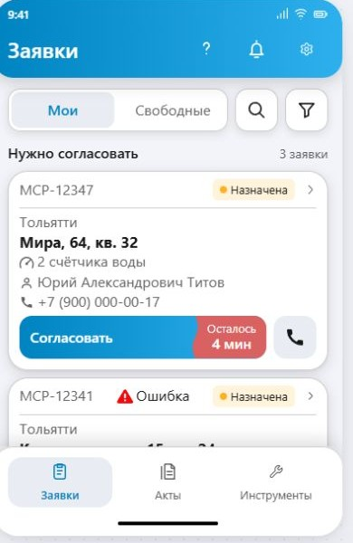
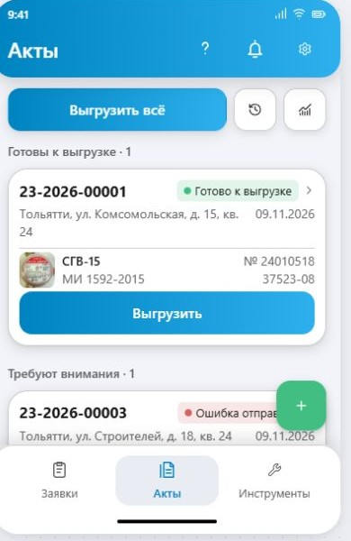
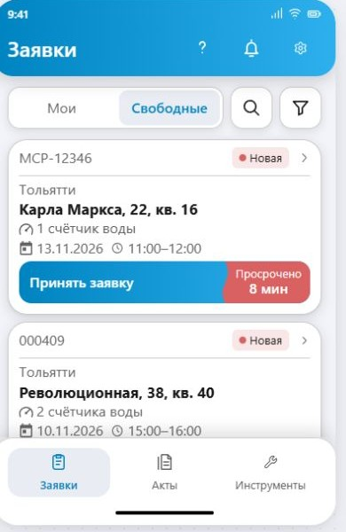
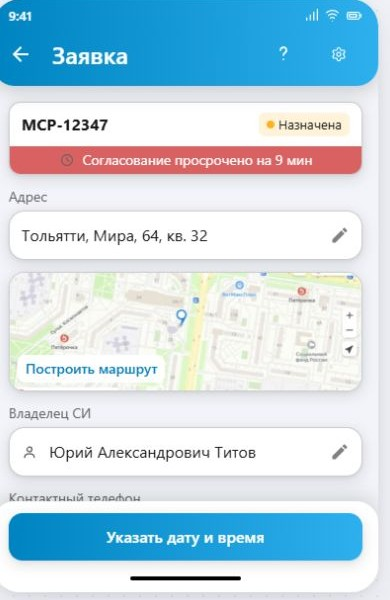
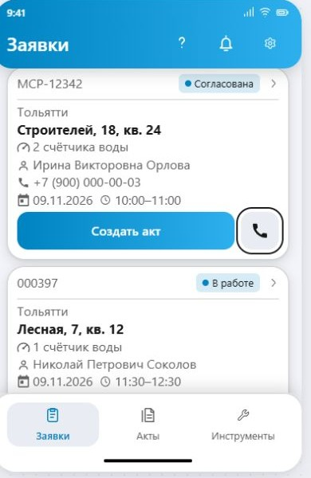
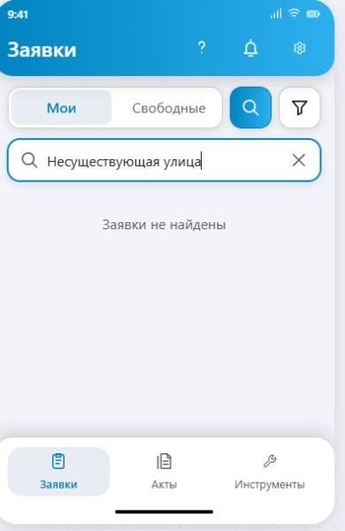
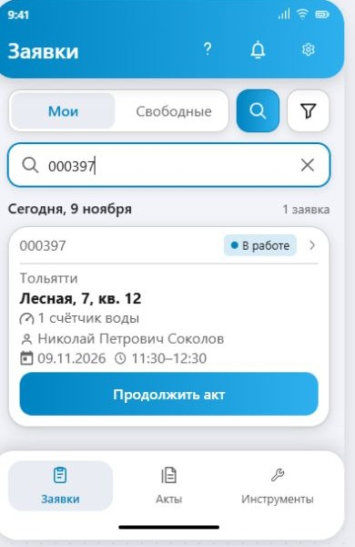
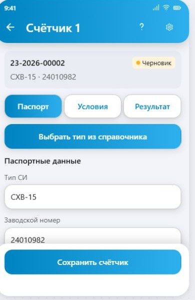
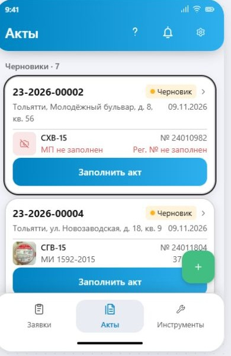
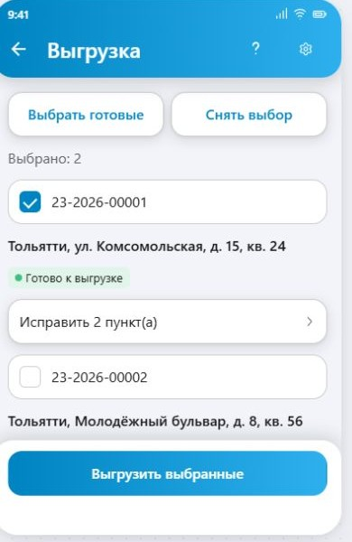

Внутренний поверитель
Рабочий макет
Проверьте сценарий и подберите оформление в одном месте.
Учебные данные. Действия внутри макета демонстрируют сценарии приложения.
От наблюдения к решению
Проблемы и решения
43 наблюдения об оригинале — что изменили в рабочем макете и что ещё предстоит.
«Решено» означает решение в макете внутреннего поверителя. Это не подтверждение исправления в Android-приложении. Влияние на скорость работы пока не измеряли.
Показано 43 из 43
01Навигация и разделение ответственностиНесколько разных способов найти функцию: переключатель «Акты / Заявки», быстрые ссылки и боковое меню. Пользователю приходится запоминать расположение.Решено в макете
Как решили
Заявки, акты и инструменты вынесены в три постоянные нижние вкладки. Настройки и уведомления находятся в шапке. Снимок показывает структуру для внутреннего поверителя.
Ссылка на пункт 1
02Навигация и разделение ответственностиСвязанные задачи распределены между разными точками входа. Заполнение актов, массовая выгрузка, история и статистика не воспринимаются как одно рабочее направление.Решено в макете
Как решили
Заполнение актов, массовая выгрузка, история и статистика собраны в разделе «Акты».
Ссылка на пункт 2
03Навигация и разделение ответственностиВ меню соседствуют функции разной частоты и назначения: повседневная работа, оборудование, справочники, настройки и обслуживание данных.Решено в макете
Как решили
Повседневная работа находится в «Заявках» и «Актах». Инструменты разделены на оборудование, справочные данные и сопровождение работы.
Ссылка на пункт 304Навигация и разделение ответственностиНастройки перегружены разнородными задачами: профиль, финансы, роль, внешние приложения, резервное копирование и выход.Частично решено
Что изменили и что осталось
Настройки сгруппированы по задачам: удобство, рабочие приложения и другие параметры. Профиль и обслуживание данных остаются на этом экране; полного разделения ответственности пока нет.
Ссылка на пункт 405Навигация и разделение ответственностиВозврат бывает непредсказуемым: из заявки со связанным актом можно попасть в акт вместо исходного списка.Требует проверки
Что ещё предстоит
На экране заявки есть возврат к заявкам. Полную цепочку «список → заявка → связанный акт → назад» с сохранением исходного списка ещё нужно проверить.
Ссылка на пункт 506Карточки и список заявокНомер визуально важнее адреса. Крупный жирный номер перетягивает внимание с места выполнения работы.Решено в макете
Как решили
Адрес выделен жирным и расположен в основной части карточки. Номер уменьшен и перенесён в служебную строку со статусом.
Ссылка на пункт 607Карточки и список заявокМного второстепенного текста: длинные подписи, контакты и служебные сведения конкурируют с данными для текущего решения.Частично решено
Что изменили и что осталось
Второстепенные сведения набраны спокойнее, подписи сокращены и дополнены иконками. Контакты на назначенных заявках остаются; достаточность уплотнения нужно проверить с поверителями.
Ссылка на пункт 708Карточки и список заявокНа новой заявке показываются контакты ещё до принятия, хотя в этот момент пользователь прежде всего выбирает подходящую работу.Решено в макете
Как решили
В карточке свободной новой заявки показаны адрес, состав работы и желаемый визит. Имя и телефон клиента до принятия не занимают карточку.
Ссылка на пункт 8
09Карточки и список заявокКнопка «Открыть» дублирует нажатие на карточку и занимает место рядом с основным действием.Решено в макете
Как решили
Карточка открывается нажатием на её содержимое и обозначена стрелкой. Внизу остаётся действие по статусу; отдельной видимой кнопки «Открыть» нет.
Ссылка на пункт 910Карточки и список заявокНазначение шкалы срока недостаточно очевидно: её можно принять за прогресс выполнения или время до визита.Частично решено
Что изменили и что осталось
Индикатор встроен в действие согласования и показывает оставшееся время либо просрочку. На экране заявки есть явная подпись о согласовании. Понятность самого индикатора в списке пока не проверена с пользователями.
Ссылка на пункт 10
11Карточки и список заявокИсторические сведения о согласовании продолжают занимать внимание, когда пользователь уже перешёл к выполнению заявки.Решено в макете
Как решили
После согласования в карточке показываются дата и время визита. Индикатор срока согласования не выводится у согласованной заявки и заявки в работе.
Ссылка на пункт 11
12Карточки и список заявокСортировка согласованных заявок не учитывает время визита, что мешает использовать список как последовательность выездов.Решено в макете
Как решили
Согласованные заявки сгруппированы по дням и упорядочены по времени начала визита. Заявки на согласование вынесены в отдельную группу.
Ссылка на пункт 1213Карточки и список заявокВ поиске нет достаточно явного состояния «ничего не найдено».Решено в макете
Как решили
При запросе без совпадений появляется отдельное пустое состояние, которое сообщает об отсутствии заявок.
Ссылка на пункт 13
14Карточки и список заявокПодпись «Создать акт» может оставаться у заявки в работе, не объясняя, что акт уже существует и его нужно продолжить.Решено в макете
Как решили
Для заявки со связанным актом действие называется «Продолжить акт». Оно отделено от сценария создания нового акта.
Ссылка на пункт 14
15Экран заявкиЭкран построен как длинная анкета, а не вокруг ближайшего действия пользователя.Частично решено
Что изменили и что осталось
Сведения разделены на компактные поля, дополнительные тексты раскрываются отдельно, а ближайшее действие закреплено снизу. Экран по-прежнему длинный; удобство нового порядка требует проверки.
Ссылка на пункт 1516Экран заявкиГлавное действие находится после длинного содержимого: до него нужно прокручивать сведения и карту.Решено в макете
Как решили
Главное действие закреплено в нижней панели и остаётся доступным при прокрутке. До него не нужно проходить все сведения и карту.
Ссылка на пункт 1617Экран заявкиРедактируемые и справочные значения выглядят одинаково. Например, возможность изменить адрес ничем явно не обозначена.Решено в макете
Как решили
Редактирование обозначено карандашом, выбор — стрелкой, справочные значения показаны без этих признаков. Адрес оформлен как кнопка редактирования.
Ссылка на пункт 1718Экран заявкиПустые поля не объясняют действие: у незаполненного времени нет приглашения «Выбрать».Решено в макете
Как решили
Для незаполненных даты и времени показано «Выбрать». Нажатие открывает диалог выбора визита.
Ссылка на пункт 1819Экран заявкиНе всегда понятно, почему действие недоступно и что нужно исправить для продолжения.Частично решено
Что изменили и что осталось
В заявке без визита главное действие предлагает «Указать дату и время». Проверка акта перечисляет пропуски. Все причины недоступности в остальных сценариях ещё не проверены.
Ссылка на пункт 1920Экран заявкиЖелаемый визит и согласованный визит недостаточно явно различаются.Требует проверки
Что ещё предстоит
В новой заявке виден запрошенный интервал, в согласованной — визит. Однозначное различение желаемого и согласованного визита во всех состояниях пока не подтверждено.
Ссылка на пункт 2021Экран заявкиПодписи «Количество ИПУ» и «Стоимость» недостаточно конкретны: неочевидны состав работы и основание суммы.Частично решено
Что изменили и что осталось
Подписи изменены на «Количество счётчиков» и «Стоимость заявки», вид работ вынесен отдельно. Основание расчёта стоимости и состав суммы ещё не раскрыты.
Ссылка на пункт 2122Экран заявкиКнопка «Закрыть» не объясняет последствия: закрывается просмотр или одновременно сохраняются изменения.Частично решено
Что изменили и что осталось
Редактирование вынесено в отдельные диалоги с «Готово» и «Отмена», а возврат — в шапку. Требуется единая проверка сохранения и отмены изменений во всех формах.
Ссылка на пункт 2223Экран заявкиДиалог согласования закрывается до получения результата операции, поэтому результат действия может быть недостаточно заметен.Требует проверки
Что ещё предстоит
Согласование в макете демонстрационное. Ожидание ответа сервера, ошибка и повторная отправка не подтверждены реальной операцией.
Ссылка на пункт 2324Экран заявкиОтмена и восстановление описаны неоднозначно: причины, сроки и возможность возврата не везде согласованы между собой.Требует проверки
Что ещё предстоит
Есть действия отмены и возврата в работу. Единые правила причин, сроков и окончательной отмены нужно проверить по требованиям и всем состояниям.
Ссылка на пункт 2425Акты и заполнение счётчиковСообщение о неготовности не перечисляет конкретные пропуски. Пользователь знает, что акт не готов, но не сразу понимает почему.Решено в макете
Как решили
Экран «Проверка акта» перечисляет конкретные пропуски и группирует их по документам, данным акта и счётчикам.
Ссылка на пункт 2526Акты и заполнение счётчиковНет перехода непосредственно к проблемному полю: пропуск приходится искать в длинной форме.Частично решено
Что изменили и что осталось
Нажатие на пропуск открывает нужный счётчик и вкладку, например «Паспорт». Автоматического перехода и фокуса на конкретном поле пока нет.
Ссылка на пункт 26
27Акты и заполнение счётчиковФорма счётчика перегружена одновременно раскрытыми группами данных.Решено в макете
Как решили
Форма счётчика разделена на вкладки «Паспорт», «Условия» и «Результат». Измерения открываются отдельно, поэтому все группы не раскрыты одновременно.
Ссылка на пункт 2728Акты и заполнение счётчиковПри заполнении длинной формы теряется контекст: к какому адресу, акту и счётчику относятся текущие сведения.Частично решено
Что изменили и что осталось
В форме видны номер акта, номер счётчика, тип и заводской номер. Адрес в этой сводке отсутствует, а сохранение контекста при глубокой прокрутке ещё нужно проверить.
Ссылка на пункт 2829Акты и заполнение счётчиковНедоступная кнопка «Выгрузить» сама по себе не объясняет следующий шаг.Решено в макете
Как решили
В карточке черновика вместо недоступной выгрузки показано действие «Заполнить акт», а пропущенные реквизиты подписаны прямо в карточке.
Ссылка на пункт 29
30Акты и заполнение счётчиковНеготовые акты исключаются из массовой выгрузки без понятного перечня пропущенных актов и причин.Частично решено
Что изменили и что осталось
В массовой выгрузке видны и готовые акты, и черновики. Кнопка «Исправить … пункт(а)» ведёт к причинам. Согласованность выбора и блокирующих документов требует дополнительной проверки.
Ссылка на пункт 30
31Акты и заполнение счётчиковСохранение на устройстве и отправка на сервер недостаточно различаются в подтверждениях.Частично решено
Что изменили и что осталось
Состояния «В очереди» и «Ошибка» поясняют, что изменения сохранены на устройстве. Сквозное различение локального сохранения и подтверждённой сервером отправки ещё не проверено.
Ссылка на пункт 3132Акты и заполнение счётчиковИстория отправки не даёт полного ответа о последующей публикации в АРШИН.Требует проверки
Что ещё предстоит
История отправки есть, но полный путь от отправки до подтверждённой публикации в АРШИН не проверен.
Ссылка на пункт 3233Ошибки, блокировки и восстановлениеНепрочитанные документы СМК могут заменять список локальных актов, перекрывая привычный рабочий экран.Частично решено
Что изменили и что осталось
Локальные акты остаются видны, а непрочитанные документы перечисляются в проверке акта. Все переходы и блокировки работы с документами ещё нужно проверить.
Ссылка на пункт 3334Ошибки, блокировки и восстановлениеПри ошибке загрузки документа экран может оставаться в состоянии загрузки, без понятного повторного действия.Требует проверки
Что ещё предстоит
Реальная ошибка загрузки документа, завершение загрузки и повторное действие не проверены.
Ссылка на пункт 3435Ошибки, блокировки и восстановлениеБлокировки из-за оборудования применяются неодинаково в разных точках входа.Требует проверки
Что ещё предстоит
Единообразие блокировок оборудования во всех точках входа требует отдельного прогона.
Ссылка на пункт 3536Ошибки, блокировки и восстановлениеОтправка условий хранения при выходе не сопровождается ожиданием подтверждения результата.Требует проверки
Что ещё предстоит
Ожидание подтверждения отправки условий хранения при выходе не подтверждено.
Ссылка на пункт 3637Ошибки, блокировки и восстановлениеВосстановление резервной копии недостаточно подробно сообщает результат: что восстановилось, что пропущено и где возникли ошибки.Требует проверки
Что ещё предстоит
Полный отчёт о восстановленных, пропущенных и ошибочных данных резервной копии не проверен.
Ссылка на пункт 3738Ошибки, блокировки и восстановлениеПоиск в АРШИН может очищать введённый номер даже при сетевой ошибке.Требует проверки
Что ещё предстоит
Сохранение введённого номера при реальной сетевой ошибке АРШИН не проверено.
Ссылка на пункт 3839Ошибки, блокировки и восстановлениеНекоторые сообщения об ошибках рекомендуют переустановку приложения, не учитывая наличие локальных черновиков и фотографий.Требует проверки
Что ещё предстоит
Все сообщения об ошибках и защита локальных черновиков и фотографий требуют отдельного аудита.
Ссылка на пункт 3940Визуал и доступностьБелый текст на светлом участке исходного голубого градиента имеет слабый контраст.Не решено
Что ещё предстоит
Исходный голубой градиент сохранён, белые надписи на нём остаются. Проверенного решения проблемы контраста пока нет.
Ссылка на пункт 4041Визуал и доступностьМасштабирование текста общих синих кнопок ограничено способом задания размера в коде. Фактическое поведение при крупном системном шрифте требует проверки на устройстве.Требует проверки
Что ещё предстоит
Макет позволяет увеличить текст. Это не подтверждает исправление размера текста общих Android-кнопок: нужна проверка реализации и устройства.
Ссылка на пункт 4142Визуал и доступностьНесколько цветовых сигналов конкурируют: предметный статус, результат поверки, неполнота и ошибка передачи. Их смысл нужно различать последовательнее.Частично решено
Что изменили и что осталось
Предметный статус, отправка и незаполненные реквизиты получили отдельные подписи и места. Полная последовательность цветовых значений во всех темах и состояниях ещё не проверена.
Ссылка на пункт 4243Визуал и доступностьВизуальное оформление недостаточно помогает отличить просмотр, редактирование и выбор значения.Решено в макете
Как решили
Просмотр, редактирование и выбор различаются: справочное значение, карандаш и стрелка с приглашением «Выбрать».
Ссылка на пункт 43По этим условиям проблем не найдено. Измените запрос или сбросьте фильтры.
Изменения интерфейса
До / после
Что убрали, добавили, переименовали и переместили относительно оригинального дизайна.
Каждая строка — конкретное изменение, которое уже есть в рабочем макете внутреннего поверителя.
Показано 48 из 48
Прокрутите таблицу вправо, чтобы увидеть все колонки.
| Элемент / экран | Было в оригинале | Стало в макете |
|---|---|---|
| Кнопка «Открыть»Карточка заявки | Отдельная кнопка «Открыть» рядом с основным действием. | Кнопка удалена. Заявка открывается нажатием на карточку; справа добавлена стрелка. Скриншот макета ↗ |
| Переключатель «Акты / Заявки»Навигация | Переключатель над списком на общем экране «Акты и заявки». | Вместо него — нижние вкладки «Заявки», «Акты», «Инструменты». Скриншот макета ↗ |
| Боковое менюНавигация | Разделы приложения открывались из выдвижного бокового меню. | Бокового меню нет. Основные разделы доступны снизу, инструменты — на отдельном экране. Скриншот макета ↗ |
| Вход в настройкиНавигация | Пункт «Настройки» в боковом меню. | Кнопка с шестерёнкой в правой части шапки. Скриншот макета ↗ |
| Уведомления в шапкеНавигация | Колокольчик слева от заголовка общего экрана. | Колокольчик перенесён вправо, рядом с настройками. Скриншот макета ↗ |
| Заголовок рабочего спискаНавигация | Общий заголовок «Акты и заявки». | Каждая вкладка имеет свой заголовок: «Заявки», «Акты» или «Инструменты». Скриншот макета ↗ |
| ИнструментыНавигация | Оборудование, справочники и служебные функции — отдельные пункты общего меню. | Добавлен экран с тремя группами: «Оборудование», «Справочные данные», «Сопровождение работы». Скриншот макета ↗ |
| История, статистика и массовая выгрузкаНавигация | Отдельные точки входа через меню и быстрые ссылки. | Кнопки «Выгрузить всё», истории и статистики собраны над списком актов. Скриншот макета ↗ |
| Мои и свободные заявкиСписок заявок | На главном экране переключались акты и заявки. | В верхней части списка заявок добавлен переключатель «Мои / Свободные». Скриншот макета ↗ |
| Кнопка поискаСписок заявок | Поиск находился в шапке общего экрана. | Кнопка поиска перенесена к переключателю «Мои / Свободные», рядом с фильтром. Скриншот макета ↗ |
| Группы спискаСписок заявок | Сплошной список карточек без заголовков дней. | Добавлены заголовки дней визита и отдельная группа «Нужно согласовать». Скриншот макета ↗ |
| Порядок визитовСписок заявок | Сортировка согласованных заявок не учитывала время визита. | Внутри дня заявки расположены по времени начала визита. Скриншот макета ↗ |
| Результат поиска без совпаденийСписок заявок | Не было отдельного явного сообщения о пустом результате. | Показывается текст «Заявки не найдены». Скриншот макета ↗ |
| Номер и адресКарточка заявки | Номер крупный и жирный; адрес набран второстепенным серым текстом. | Номер уменьшен и перенесён в верхнюю строку со статусом. Улица и дом выделены жирным. Скриншот макета ↗ |
| Населённый пунктКарточка заявки | Населённый пункт был частью общей строки полного адреса. | Населённый пункт вынесен в отдельную строку над улицей и домом. Скриншот макета ↗ |
| Контакты новой заявкиКарточка заявки | Имя владельца и телефон показывались до принятия заявки. | В карточке свободной новой заявки имя и телефон скрыты. Скриншот макета ↗ |
| Состав работыКарточка заявки | В исходной карточке были номер, статус, адрес, дата и контакты. | Под адресом добавлена короткая строка состава работы: например «2 счётчика воды». Скриншот макета ↗ |
| Подписи контактовКарточка заявки | Текстовые подписи «Владелец СИ:» и «Контактный номер:». | В назначенной заявке длинные подписи заменены иконками перед именем и телефоном. Скриншот макета ↗ |
| СтатусКарточка заявки | Широкая насыщенная цветная плашка с белой подписью. | В режиме «Мягкие» — компактная светлая плашка с цветной точкой и тёмной подписью. Скриншот макета ↗ |
| Текст основных кнопокКарточка заявки | Подписи набраны прописными: «ПРИНЯТЬ ЗАЯВКУ», «ОТКРЫТЬ». | Подписи в обычном регистре: «Принять заявку», «Согласовать», «Продолжить акт». Скриншот макета ↗ |
| Срок согласованияКарточка заявки | Отдельная цветная шкала и подпись срока. | Остаток времени или просрочка встроены в основную кнопку до согласования. Скриншот макета ↗ |
| Шкала после согласованияКарточка заявки | Исторические сведения о сроке согласования оставались на карточке. | У согласованной заявки и заявки в работе шкалы согласования нет; показаны дата и время визита. Скриншот макета ↗ |
| Действие при существующем актеКарточка заявки | У заявки в работе могла оставаться подпись «Создать акт». | Для заявки со связанным актом показано «Продолжить акт». Скриншот макета ↗ |
| Номер и статусЭкран заявки | Номер и статус располагались прямо на фоне экрана. | Они собраны в общую белую карточку; срок согласования вынесен в её нижнюю цветную ленту. Скриншот макета ↗ |
| Населённый пункт и адресЭкран заявки | Два отдельных поля: «Населённый пункт» и «Адрес». | Одна редактируемая строка адреса, содержащая населённый пункт, улицу и дом. Скриншот макета ↗ |
| Поверхности полейЭкран заявки | Серые заливки полей на светлом фоне. | Белые отдельные поля с обводкой и общей настройкой теней. Скриншот макета ↗ |
| Признак редактированияЭкран заявки | Адрес и владелец выглядели как обычные значения в поле. | В редактируемых строках адреса и владельца добавлен карандаш справа. Скриншот макета ↗ |
| Незаполненные дата и времяЭкран заявки | Пустое поле без приглашения к выбору. | Показываются «Выбрать», иконка календаря или часов и стрелка перехода. Скриншот макета ↗ |
| Подпись количестваЭкран заявки | «Количество ИПУ». | «Количество счётчиков». Скриншот макета ↗ |
| Подпись стоимостиЭкран заявки | «Стоимость». | «Стоимость заявки». Скриншот макета ↗ |
| Основное действиеЭкран заявки | Кнопка находилась после содержимого формы и карты. | Кнопка закреплена в нижней панели и остаётся видимой при прокрутке. Скриншот макета ↗ |
| Действие в карточке черновикаАкты | Недоступная кнопка «Выгрузить». | Кнопка «Заполнить акт». Скриншот макета ↗ |
| Пропущенные реквизиты в карточкеАкты | Общий сигнал о неготовности без перечня конкретных полей. | Подписаны пропуски у счётчика: «МП не заполнен», «Рег. № не заполнен», отсутствие фото. Скриншот макета ↗ |
| Проверка готовностиАкты | Сообщение о неготовности акта без конкретного списка. | Добавлен экран «Проверка акта» со списком пропусков по документам, акту и счётчикам. Скриншот макета ↗ |
| Переход из списка пропусковАкты | Пропущенные данные приходилось искать в форме самостоятельно. | Нажатие на пропуск открывает соответствующий счётчик и вкладку формы. Скриншот макета ↗ |
| Редактор актаАкты | Данные акта, фотография, чек и счётчики располагались в одной длинной форме. | Форма разделена на вкладки «Данные», «Счётчики» и «Материалы». |
| Группы формыСчётчики | Паспортные данные, условия и результат были раскрыты в общей форме. | Добавлены вкладки «Паспорт», «Условия», «Результат». Скриншот макета ↗ |
| Контекст формыСчётчики | В длинной форме не было отдельной компактной сводки акта и счётчика. | Над вкладками показаны номер и статус акта, тип счётчика и заводской номер. Скриншот макета ↗ |
| Неготовые акты в массовой выгрузкеВыгрузка | Неготовые акты исключались из массовой выгрузки. | Черновики отображаются в общем списке с кнопкой «Исправить … пункт(а)». Скриншот макета ↗ |
| Нижний край шапкиОбщее оформление | Прямой нижний край верхней панели. | В основном оформлении нижние углы шапки скруглены. Скриншот макета ↗ |
| Группы настроекНастройки | Параметры шли общей формой с разделителями. | Добавлены заголовки групп «Удобство», «Рабочие приложения», «Кассовые чеки», «Данные и аккаунт». Скриншот макета ↗ |
| Карточка профиляНастройки | ФИО и сведения пользователя были отдельными строками среди параметров. | Вверху добавлена карточка профиля с инициалами, ФИО и организацией; она открывает личный кабинет. Скриншот макета ↗ |
| Выбор темыНастройки | Три сегмента «Авто / Светлая / Тёмная» прямо в форме. | Одно поле «Цветовая схема» с текущим значением и открытием списка вариантов. Скриншот макета ↗ |
| Выбор QR-сканераНастройки | Сегментный переключатель «ZXing / Google ML Kit». | Поле «Сканер QR-кодов» с текущим значением и открытием выбора. Скриншот макета ↗ |
| Выбор приложения картНастройки | Сегментный переключатель «Яндекс Карты / Google Maps». | Поле «Приложение карт»; добавлен вариант «Спрашивать при открытии». |
| Резервная копияНастройки | Кнопки «Создать» и «Загрузить» прямо на экране настроек. | Одна строка «Резервная копия», открывающая отдельный диалог действий. |
| Кнопка «Закрыть»Настройки | Отдельная кнопка «Закрыть» внизу настроек. | Кнопка удалена. Для выхода с экрана используется «Назад» в шапке. |
| Размер текстаНастройки | Отдельного выбора размера текста на исходном экране настроек не было. | Добавлено поле «Размер текста» с вариантами «Обычный», «Крупный», «Очень крупный». Скриншот макета ↗ |
По этим условиям строк не найдено. Измените запрос или сбросьте фильтры.
История поиска
Эксперименты
От первых концепций до отдельных деталей. Каждую серию можно раскрыть и попробовать.
По этому запросу экспериментов нет. Попробуйте другое название.
Контекст и решения
Анализы
Исходные исследования, принятые правила и обоснования изменений.
Сценарии исходного приложения
Роли и процессы
EPC-схемы с переходами в подпроцессы, деталями и источниками.